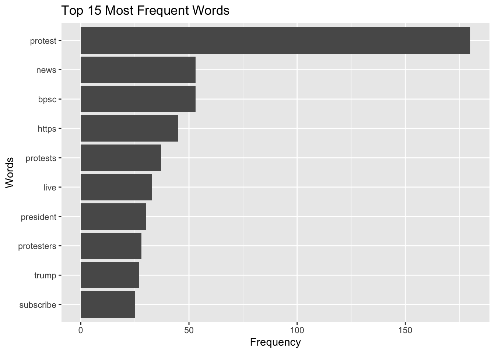
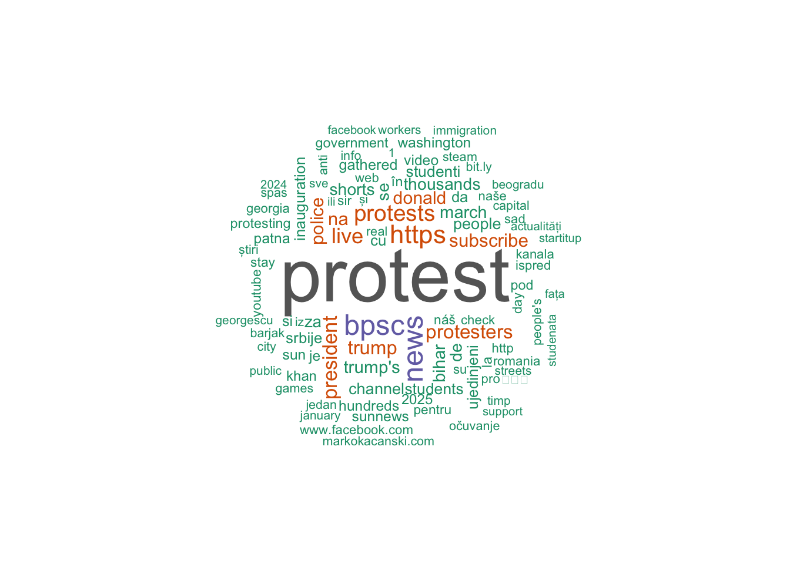

5. Basic textual analysis
Learning goals
By the end of this tutorial, you will be able to:
- Understand how text data is structured for analysis in R
- Tokenize text into words and n-grams
- Remove stopwords and clean textual data
- Calculate word frequencies and visualize them
- Create word clouds
- Identify co-occurring words using bigrams
1. Introduction
We will learn how to preprocess text data, remove noise, and analyze patterns in language. First, install and load the packages
── Attaching core tidyverse packages ──────────────────────── tidyverse 2.0.0 ──
✔ dplyr 1.1.4 ✔ readr 2.1.5
✔ forcats 1.0.0 ✔ stringr 1.5.1
✔ ggplot2 4.0.0 ✔ tibble 3.2.1
✔ lubridate 1.9.4 ✔ tidyr 1.3.1
✔ purrr 1.0.4
── Conflicts ────────────────────────────────────────── tidyverse_conflicts() ──
✖ dplyr::filter() masks stats::filter()
✖ dplyr::lag() masks stats::lag()
ℹ Use the conflicted package (<http://conflicted.r-lib.org/>) to force all conflicts to become errorsLoading required package: RColorBrewerIn this module, we use YouTube data collected via the YouTube API. The dataset was gathered using the keyword “protest” from 12-01-2024 to 02-01-2025.
Let’s create a subset with five key variables to begin the analysis.
2. Pre-processing text
Text data is often unstructured, so it needs to be processed before analysis. One key step is tokenization, which splits text into individual words.
- Example sentence:
I am going to school today - Tokenized output:
I,am,going,to,school,today
This processed text data can then be used for various analyses, such as identifying word frequency (which words appear most often) or detecting sentiment by analyzing the presence of positive or negative words.
2-1. Tokenization
Common words like “the,” “and,” and “to” appear frequently but carry little meaning. These are called stopwords. Let’s tokenize the description column in YT_data and create a word column.
Tokenization breaks text into individual words and removes sentence structure.If you examine the first 20 words, you’ll notice common words like “to,” “the,” “and,” and “of,” which add little (or no) meaning.
2-2. Removing stopwords
One of the first steps in Natural Language Processing (NLP) is removing words that carry little to no meaningful information, such as “a,” “the,” and “is” These are known as stopwords.
In tidytext, there is a predefined list of stopwords (stop_words).
To view some preset stopwords, you can simply run ‘stop_words’
2-3. Customize stopwords
If there is a specific stopword you’d like to add—such as “lol”, you can create a custom stopword list and merge it with the existing tidytext stopwords dataset.For example, the following code adds “lol” to the stopword list (creating a new dataframe with your custom stopwords):
Create a custom stopword list (e.g., adding “lol”):
Combine the custom stopwords with the default stopwords
This code removes unwanted words from the tokenized dataset.
Try: head(YT_tokenized_cleaned$word, 20) to display the cleaned words with stopwords removed.
3. Word frequency analysis
Count word frequencies
word n
1 protest 180
2 bpsc 53
3 news 53
4 https 45
5 protests 37
6 live 33
7 president 30
8 protesters 28
9 trump 27
10 subscribe 25
11 na 24
12 police 24
13 donald 23
14 trump's 22
15 bihar 21
16 march 21
17 de 20
18 se 20
19 shorts 20
20 thousands 20It is natural for the keyword used in data collection to appear most frequently. If you want to remove “protest”, you can add it to the stopword list.
3-1. Visualization
You can also visualize this using ggplot2. For example, to display the top 15 most frequently occurring words:
Here, I selected top 15 words (If you don’t specify a number or use this function, the graph will include the entire dataset, which may be difficult to interpret).

Word frequency does not capture context, sarcasm, or its underlying meaning. Text analysis should be interpreted carefully and ideally combined with qualitative review.
4. Word cloud
You can also generate a word cloud, which visually represents the most common words in a text. In a word cloud, larger words indicate higher frequency. This can be a useful way to quickly identify the most important terms in a large dataset.
Count word frequency
Create a word cloud (using wordcloud and RColorBrewer)

min.freq = Minimum frequencyfor a word to be displayed (display words that appear at least twice).max.words= Maximum words to show.colors = brewer.pal(8, "Dark2")= Color palette (this palette use the max of 8 colors; you can change it). If you’d like to see what color palettes are available, you can usedisplay.brewer.all().random.order = FALSEArrange by frequency.
5. N-gram analysis
An n-gram is a sequence of words. This analysis helps examine sequences of words in text data.
A bigram consists of two consecutive words, such as “communication theory”. A trigram contains three words in sequence, like “school of communication”. A 5-gram (quintgram) includes five consecutive words, for example, “communication theory and research foundation”.
You can use n-gram analysis in R using the unnest_tokens() function to extract meaningful word patterns from text. We previous tokenized our text and looked at each individual word, but if we want to analyze n-grams, we can set the token argument to “ngrams”.
Bigrams (2-word sequence)
Trigrams (3-word sequence) Additionally, you can specify the n argument to define the length of the n-gram. For example, setting n = 3 will extract trigrams (three-word sequences).
[1] "people's march adviser" "march adviser ash"
[3] "adviser ash lee" "ash lee woodard"
[5] "lee woodard henderson" "woodard henderson discusses"Most common trigram
trigram n
1 <NA> 119
2 subscribe to sun 14
3 news channel to 13
4 sun news channel 13
5 sunnews subscribe to 13
6 to sun news 13
7 at markokacanski.com check 9
8 barjak za očuvanje 9
9 channel to stay 9
10 check our games 9Q. How do we use it in our research?
If you want to analyze how different phrases are used—for instance, if your bigrams show “vaccine mandate,” “vaccine hesitancy,” “vaccine conspiracy,” and “vaccine autism”*, this dataset may primarily reflect anti-vaccine sentiment. By examining the frequency and context of these phrases, you can identify the patterns or trends of online discourse.
Improve the n-gram explanation with a cleaning step
When doing bigrams, many results include stopwords like: ‘of the,’ ‘in the,’ ‘to the.’ You may want to remove stopwords from bigrams:
YT_bigram_clean now contains two-word combinations, no stopwords, and cleaned phrases ready for frequency analysis
descriptionis the text column being analyzedunnest_tokens()splits text into tokenstoken = "ngrams"tells R to create word sequencesn = 2means two-word sequences (bigrams)- The new column created is named
bigram - Each bigram like “people protest” is split into: word1 = “people” & word2 = “protest”
filter()removes bigrams where either word is a common stopword.
Bi-gram: Words associated with a keyword
We can identify words associated with specific keywords in the dataset.
For example, to find words that appear with “president,” we tokenize the text into bigrams using unnest_tokens(), split each bigram into two words, and filter for pairs that include “president”.
Counting the accompanying words shows which terms most often co-occur with “president,” helping us see how the term is described or used in context.
Let’s look at the results:
word1 word2 n
1 president donald 7
2 president elect 6
3 against president 4
4 news president 4
5 president trump's 3
6 president yoon 3
7 us president 3
8 for president 2
9 of president 2
10 to president 2
11 america president 1
12 and president 1
13 as president 1
14 hegseth president 1
15 oppose president 1
16 president aleksandar 1
17 president has 1
18 president news 1
19 president of 1
20 president putin 1
21 president subscribe 1
22 president trump 1
23 president vladimir 1
24 president william 1
25 president zelensky 1
26 protest president 1
27 putin president 1
28 russian president 1
29 sudan's president 1
30 u.s president 1
31 with president 1
32 zionists president 1This captures immediate neighboring words (co-occurrences) such as “president trump” or “president elect.” We will also cover the semantic network analysis which allows us to looks at broader relationships among words across the dataset, not just adjacent ones.
Summary:
In this module, you learned how to structure and clean textual data in R. You practiced tokenizing text, removing stopwords, analyzing word frequency, generating visualizations, and examining word sequences using n-grams. These techniques provide a foundation for computational text analysis and prepare you for more advanced methods such as sentiment analysis, topic modeling, and semantic network analysis.